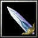

| 物品名稱 | 圖片 | 價格 | 說明 | |
| 打刀(Ｑ) | 1200 | 攻擊+25 攻擊速度+25% |
||
| 太刀(Ｗ) |
1600 | 攻擊+10 敏捷+10 |
||
| 薙刀(Ｅ) | 1700 | 攻擊+10 力量+10 |
||
| 杵杖(Ｒ) |
1100 | 攻擊+10 智慧+10 |
||
| 錫杖(Ａ) | 2200 | 攻擊+10 智慧+20 [使用]施展妖火令目標25秒內降低15點裝甲，並獲得視野，持續時間25秒。消耗法力150，等待時間20秒 |
||
| 長槍(Ｓ) | 3400 | 攻擊+20 力量+30 |
||
| 伏魔輪杖(Ｄ) | 3000 | 攻擊+10 智慧+30 降低受到的法術傷害30% |
||
| 役法輪(Ｆ) | 4500 | 攻擊+35 攻擊時有10%機會擊暈敵人0.7秒 |
||
| 妖刀(Ｚ) | 3400 | 攻擊+40 獲得10%的吸血能力 |
||
| 鋒利短刀(Ｘ) |  | 1450 | 攻擊+35 | |
| 巨斧(Ｃ) | 2100 | 攻擊+28 力量+5 |